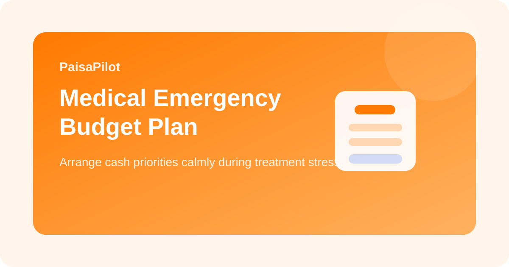

Medical Emergency Budget Plan: How to Arrange Cash Without Panic
Last updated: March 19, 2026

A medical emergency creates emotional pressure and money pressure at the same time. In that situation, many families make rushed financial decisions: breaking the wrong assets, borrowing at bad terms, or ignoring insurance steps. A simple emergency budget plan can reduce panic and help you protect the rest of your finances.
Quick Answer
In a medical emergency, prioritize immediate treatment cash, insurance coordination, essential household continuity, and controlled borrowing. The goal is not just to pay the bill today. The goal is to avoid turning one crisis into a longer financial mess.
First 4 Money Priorities
- Confirm the immediate amount needed for admission or urgent treatment.
- Check available cash sources: savings account, emergency fund, liquid deposits.
- Activate insurance or reimbursement process as early as possible.
- Protect essentials like rent, groceries, medicines, and EMIs for the next 30 days.
Cash Source Order
| Use first | Use carefully | Avoid if possible |
|---|---|---|
| Emergency fund, savings, insurer cashless route | Family support, short low-cost borrowing | High-interest personal loan, credit card rollover, breaking long-term investments in panic |
Insurance Matters More Than People Realize
If there is health insurance, cashless or reimbursement process should start immediately. Keep policy number, ID, and hospital desk contact ready. Even when insurance does not cover everything, partial support can protect your cash reserves.
What to Freeze Temporarily
- non-essential shopping
- travel and entertainment spending
- optional subscriptions
- non-urgent big purchases
Medical Emergency Budget Checklist
- Write current hospital estimate.
- Write available liquid cash today.
- Write insurance expected support.
- List the next 30-day essential home expenses.
- Calculate the remaining gap before taking any loan.
Common Mistakes
- Ignoring insurer process and paying everything blindly first.
- Using high-interest borrowing before checking lower-cost options.
- Breaking long-term savings without understanding the real gap.
- Forgetting that household monthly expenses still continue.
After the Emergency
Once the patient is stable, review all bills, insurance papers, and borrowed amounts. Then create a rebuild plan for the emergency fund. Many families focus only on payment, but the recovery phase is where financial stability is rebuilt.
Related Guides
Health Insurance Basics, Emergency Fund Guide, Loan EMI Planning
Editorial Note: Educational information only; for treatment and claims, follow hospital and insurer instructions.